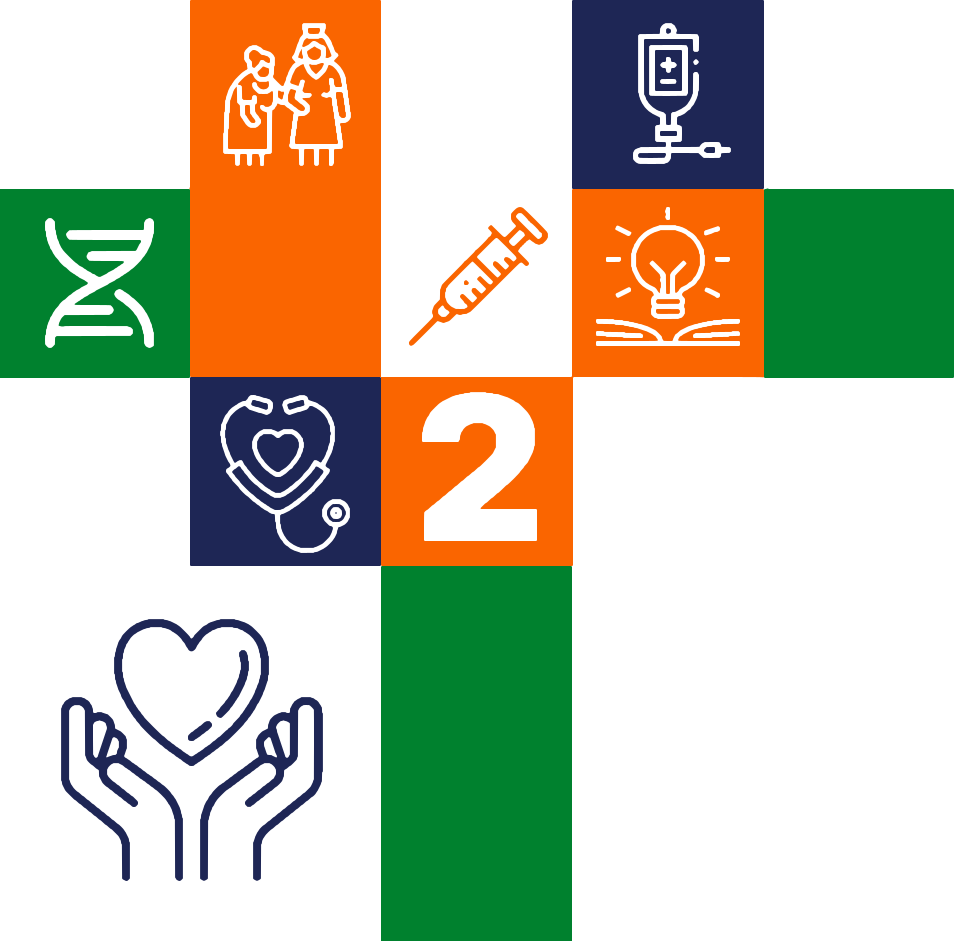
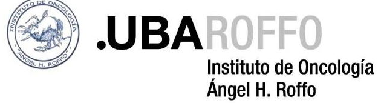
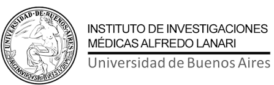
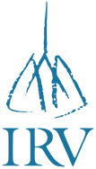
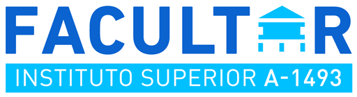

Segunda circular · Noviembre 2026
2.° Congreso de Enfermería de los Hospitales Universitarios de la Universidad de Buenos Aires
Docencia, ciencia y asistencia:El triple compromiso de la Enfermería universitaria
Compartimos el programa definitivo del Congreso: cuatro mesas redondas, cinco disertaciones, cinco talleres simultáneos y la sesión de pósteres, a cargo de los equipos de Enfermería de los Hospitales e Institutos Universitarios de la UBA.
FechaMiércoles 18 de noviembre2026
Horario08:00 a 17:30 hsAcreditación desde las 08:00
LugarFacultad de Ciencias Médicas, UBAParaguay 2155, CABA
InscripciónLibre y gratuitaCompletar el formulario
Pósteres, premios y sorteos
La convocatoria a pósteres finalizó el 25 de octubre. Los trabajos recibidos están en evaluación por el Comité Científico y se presentarán durante la jornada.
Premio al póster más destacado
Elegido por el Comité Científico.
Sorteos entre los asistentes
A las 17:10, en el cierre oficial.
Programa
| Horario | Actividad |
|---|---|
| 08:00 – 09:0060 min | Acreditación (código QR) |
| 09:00 – 09:3030 min | Apertura del Congreso |
| 09:30 – 10:1040 min | Mesa redonda Hospital de Clínicas “José de San Martín”
Construyendo el futuro de la enfermería: práctica avanzada, autonomía profesional y transformación del cuidado en el Hospital de Clínicas José de San Martín (UBA)
|
| 10:10 – 10:5040 min | Mesa redonda Instituto de Oncología “Ángel H. Roffo”
Inmunoterapia y nuevas vías de administración en oncología: desafíos actuales de la práctica de enfermería
|
| 10:50 – 11:2030 min | Café / Break |
| 11:20 – 12:0040 min | Mesa redonda Instituto de Investigaciones Médicas “Dr. Alfredo Lanari”
Nuevos desafíos y transformaciones en el accionar de enfermería postpandemia: una mirada hacia la adaptación a las necesidades de la comunidad
|
| 12:00 – 12:4040 min | Disertaciones Instituto de Tisioneumonología “Prof. Dr. Raúl Vacarezza”
|
| 12:40 – 13:4060 min | Receso / Almuerzo |
| 13:40 – 14:4060 min | Talleres simultáneos A cargo de cada institución
|
| 14:40 – 15:2040 min | Disertación Instituto Superior FACULTAR
Comunicación en Salud
|
| 15:20 – 16:0040 min | Disertación Carrera de Licenciatura en Enfermería, Facultad de Medicina (UBA)
El paciente pediátrico crónico complejo: una mirada desde enfermería
|
| 16:00 – 16:3030 min | Café / Break |
| 16:30 – 17:1040 min | Mesa redonda Cierre de la jornada y conclusiones
|
| 17:10 | Sorteos y cierre oficial |
Comités
Comité Organizador
- Ruben OrtizSubdelegado · Hospital de Clínicas “José de San Martín”
- Paola CardozoDelegada General · Instituto de Oncología “Ángel H. Roffo”
- Gonzalo BustosDelegado General · Instituto de Investigaciones Médicas “Dr. Alfredo Lanari”
- Clarisa Da SilvaDelegada General · Instituto de Tisioneumonología “Prof. Dr. Raúl Vacarezza”
Comité Científico
- Prof. Lic. Ricardo MolinaDirector de Enfermería · Hospital de Clínicas “José de San Martín”
- Lic. Mercedes SerranoDirectora de Enfermería · Instituto de Oncología “Ángel H. Roffo”
- Lic. Enrique DreeDirector de Enfermería · Instituto de Tisioneumonología “Prof. Dr. Raúl Vacarezza”
- Lic. Prof. Tulio CardichDirector de Enfermería · Instituto de Investigaciones Médicas “Dr. Alfredo Lanari”
- Lic. María SantiniDirectora de la carrera de Licenciatura en Enfermería · Facultad de Ciencias Médicas, UBA
- Mg. Lic. Leandro GuerschbergRector · Instituto Superior FACULTAR
Organizan




Consultas: cehu.inscripciones@gmail.com · Más información en 2cehu.netlify.app
¡Los/as esperamos!Comité Organizador y Comité Científico
2.° Congreso de Enfermería de los Hospitales Universitarios de la UBA
2.° Congreso de Enfermería de los Hospitales Universitarios de la UBA